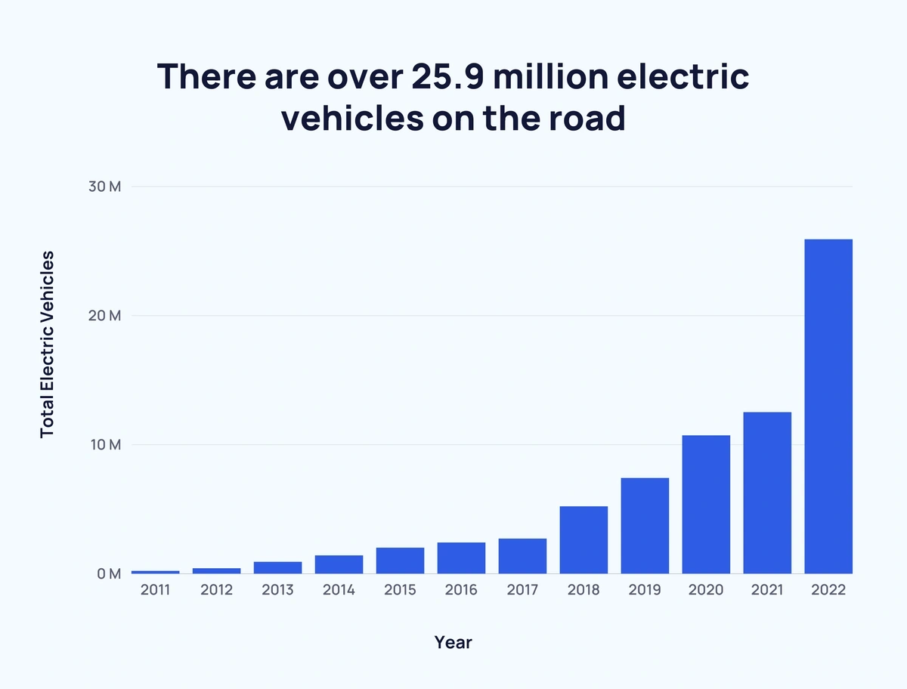

Electric vehicles (EVs) represent a sustainable transportation option, offering numerous environm ental advantages. They emit no pollutants from their tailpipes, contributing to cleaner air and reduced pollution levels. Additionally, EVs solely rely on electricity, eliminating the need to purchase traditional fuels such as petrol or diesel.
On a global scale, the EV market is experiencing rapid growth, with a compound annual growth rate (CAGR) of 21.7%. It is projected to encompass 39.21 million units by the year 2030. In India, the Economic Survey of 2023 anticipates a remarkable growth trajectory for the EV sector, with a CAGR of 49% from 2022 to 2030, resulting in an estimated 10 million annual sales by 2030.
Electric vehicles (EVs) present a promising avenue for displacing fossil fuels within the transportation sector. The electrification of transportation offers the dual advantages of enhanced energy efficiency and decreased localized pollution.
India holds the unfortunate distinction of having nine out of the ten most polluted cities globally, all located in the northern region, including Greater Noida, Noida, Lucknow, and Delhi. The causes of this severe air pollution are multifaceted, with vehicular emissions playing a substantial role.Therefore, it's no surprise that the Indian government is gradually but decisively promoting electric vehicles (EVs). In doing so, India may be witnessing a significant transformation in its commuting landscape. In the early 1900s, electric vehicles lost the competition to their fuel-based counterparts, but the tables may now be turning.
The government's efforts to promote electric vehicles (EVs) in India have already shown promising outcomes. According to Nitin Gadkari, the Minister of Road Transport and Highways, there has been significant growth in the adoption of EVs: two-wheeler EVs increased by 422%, 3-wheelers by 75%, and 4-wheelers by 230% between 2019 and 2021. The number of electric buses also surged by over 1200% during this period.
In response to the increasing EV numbers, the Ministry of Power has mandated the installation of at least one charging station every 3 kilometers and every 25 kilometers on both sides of highways across India.
The push for EVs has the potential to spawn a new and substantial industry in India, leading to job creation and a boost in the country's GDP. Additionally, rising per capita income and a burgeoning middle class have resulted in greater demand for electronic devices like phones, laptops, and power banks, all of which rely on batteries. This has given rise to a new sector, the manufacturing of advanced batteries, which is projected by numerous experts to be one of India's most significant economic opportunities in the 21st century.
While the prospects for EVs appear promising, there are notable concerns to consider. Firstly, the manufacturing of EVs may result in higher greenhouse gas emissions compared to traditional vehicles. Moreover, the environmental friendliness of EVs depends on the sources of their power, and some electric models may be less eco-friendly than their petrol counterparts. Cost is another factor, as EVs tend to be more expensive to purchase, and their driving range on a single charge may be limited compared to petrol or diesel vehicles.
However, India is positioning itself as a global leader in EV manufacturing, and electric vehicles are seen as a solution to facilitate higher renewable energy integration while enhancing grid stability. Furthermore, India urgently requires a transportation revolution to combat congestion and reduce pollution in its cities, as well as decrease reliance on imported oil.
In summary, while there are considerations and challenges associated with the adoption of EVs, they offer a practical path forward, particularly given the increasing demand for sustainable transportation solutions.